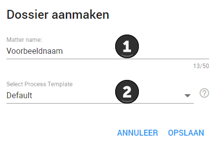

In verband met het correct voorbereiden van uw dossier raden we u aan om nieuwe dossiers aan te vragen bij ZyLAB zelf. Neem hiervoor contact met ons op.
Wanneer u een Woo-verzoek ontvangt blijft het voortraject nagenoeg hetzelfde. Het Woo-verzoek moet immers nog steeds beoordeeld worden of het ontvankelijk en specifiek genoeg is. Als dit het geval is kan het behandeld gaan worden. U kunt nu een nieuwe zaak (Dossier) aanmaken in ZyLAB ONE.
Klik op de knop Toevoegen Dossier in het Dossier Dashboard.
Voer bij 1 de gewenste naam van de zaak/het verzoek in en selecteer bij 2 de gewenste template. Indien u geen op maat gemaakt template van ZyLAB heeft, is dit het template Default. Geef uw zaken logische namen, zodat u deze later gemakkelijk weer terug kunt vinden en alle medewerkers in één oogopslag weten welke zaak het betreft.
